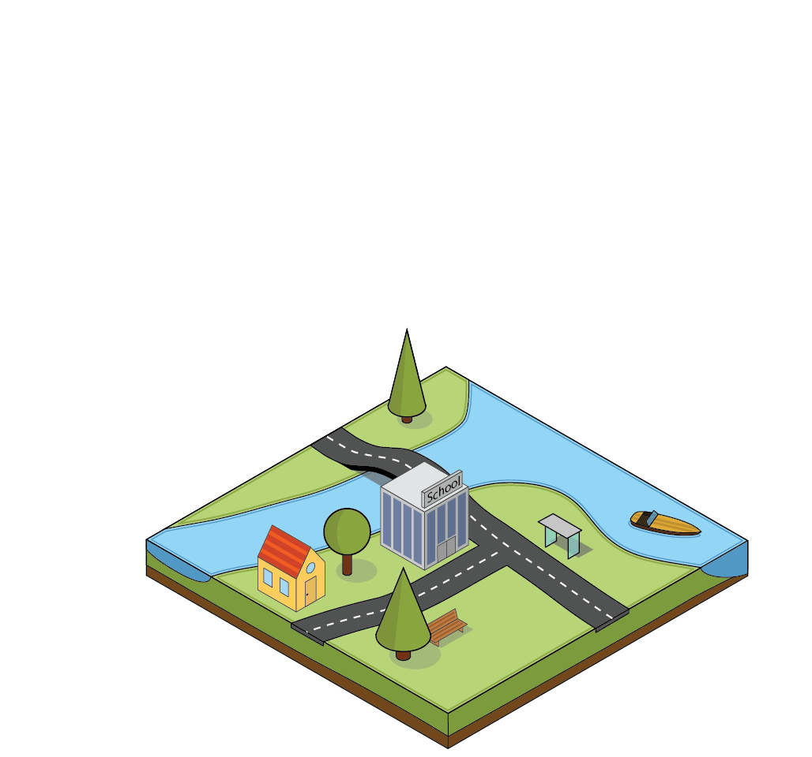
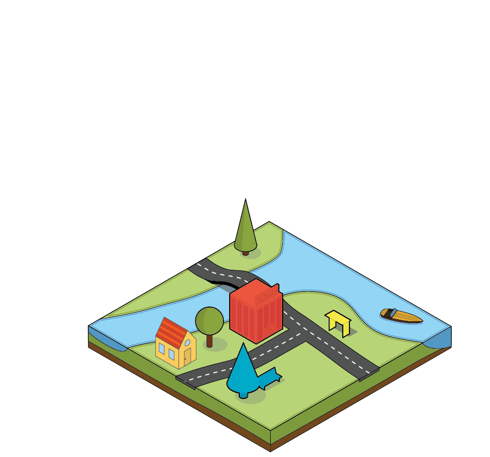
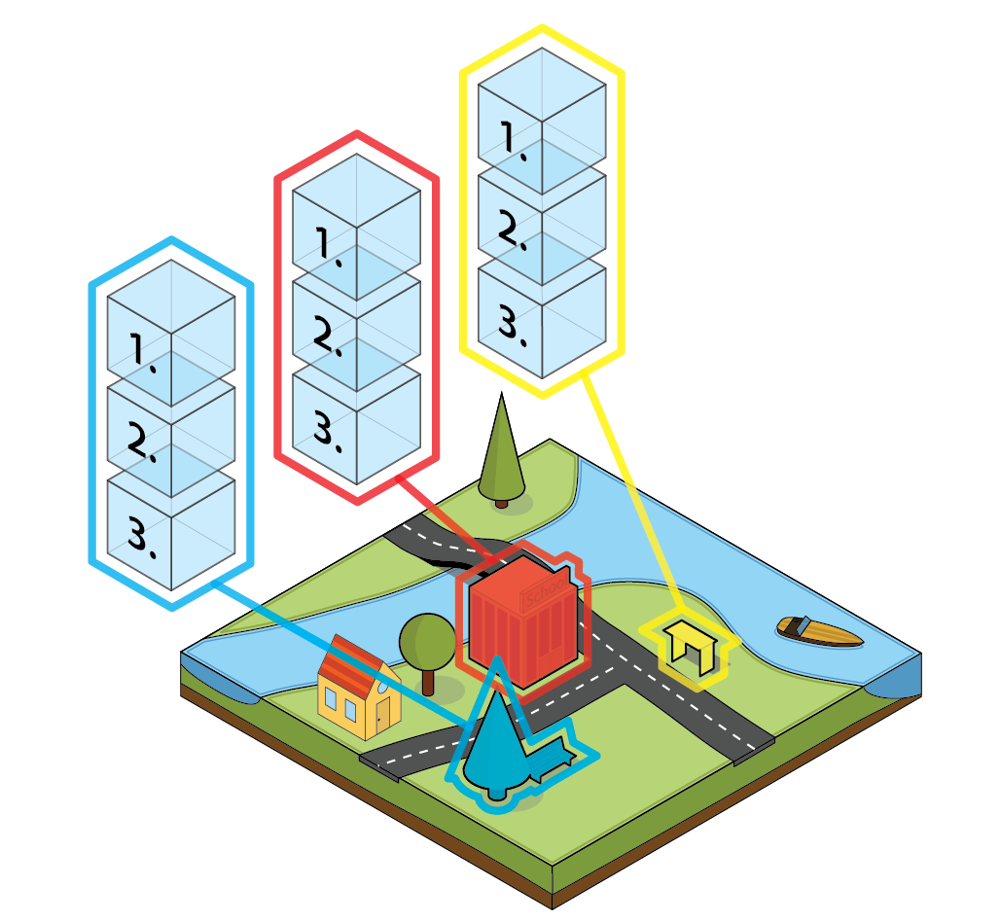

CitySDK Linked Data API

Existing data sets, legacy databases, city services
One unified REST API
Geo-spatial city data
Concept (1)

Concept (2)
Concept (3)
Concept (4)

Real-time events & OSM

Statistical data & administrative regions
JSON, RDF/Turtle, GeoJSON, JSON-LD
Ideas for future version
DBpedia, OpenStreetMap, Schema.org, …
1: Categorize objects
amenity=school
tourism=museum
1: Categorize objects
dbpedia:Museum
schema:Museum
1: Categorize objects
http://ld.citysdk.eu/
amenity/school/u179mt
3: Fuzzy IRIs
http://ld.citysdk.eu/
Garages_(parking)/u173zt1
3: Fuzzy IRIs

 citysdk.waag.org, bert@waag.org
citysdk.waag.org, bert@waag.org